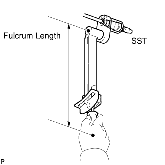

AIR FUEL RATIO SENSOR > INSTALLATION |
| 1. INSTALL AIR FUEL RATIO SENSOR (for Bank 2 Sensor 1) |
 |
Temporarily install the sensor to the exhaust pipe by hand.
 |
Using SST, tighten the sensor.
| 2. INSTALL AIR FUEL RATIO SENSOR (for Bank 1 Sensor 1) |
|
Temporarily install the sensor to the exhaust pipe by hand.
Using SST, tighten the sensor.
| 3. INSTALL FRONT EXHAUST PIPE ASSEMBLY |
Install a new gasket and the front exhaust pipe to the exhaust manifold with 3 new nuts.
Connect the air fuel ratio sensor connector.
Connect the heated oxygen sensor connector.
Attach the heated oxygen sensor wire clamp.
| 4. INSTALL FRONT NO. 2 EXHAUST PIPE ASSEMBLY |
Install a new gasket and the front No. 2 exhaust pipe to the exhaust manifold LH with 3 new nuts.
Connect the air fuel ratio sensor connector.
Connect the heated oxygen sensor connector.
| 5. INSTALL CENTER EXHAUST PIPE ASSEMBLY |
Install the center exhaust pipe to the 3 exhaust pipe supports.
Install 2 new gaskets to the front exhaust pipe and front No. 2 exhaust pipe.
Install the 4 bolts.
| 6. INSTALL TAILPIPE ASSEMBLY |
Install the tailpipe to the 2 exhaust pipe supports.
Install a new gasket to the center exhaust pipe.
 |
Connect the tailpipe and center exhaust pipe with a new clamp.
| 7. INSPECT FOR EXHAUST GAS LEAK |
| 8. INSTALL NO. 2 ENGINE UNDER COVER |
 |
Install the No. 2 engine under cover with the 2 bolts.